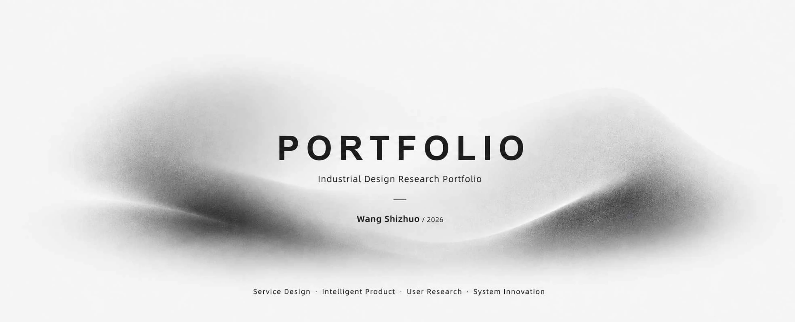
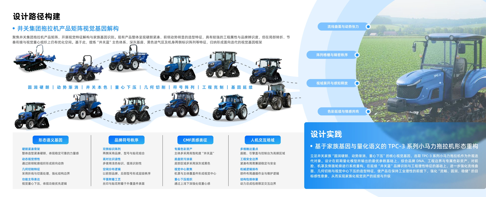
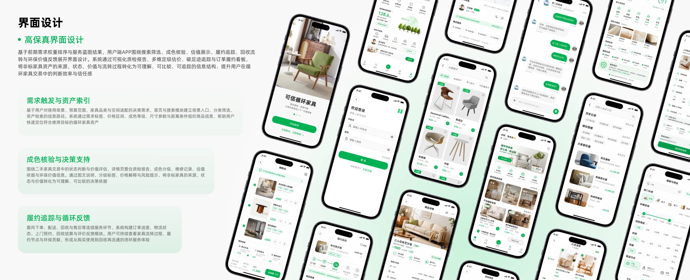
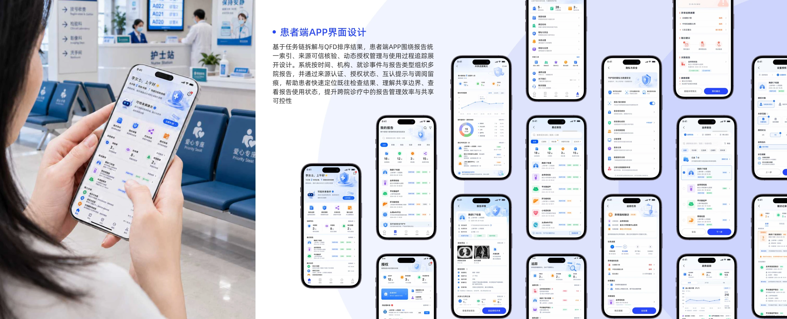
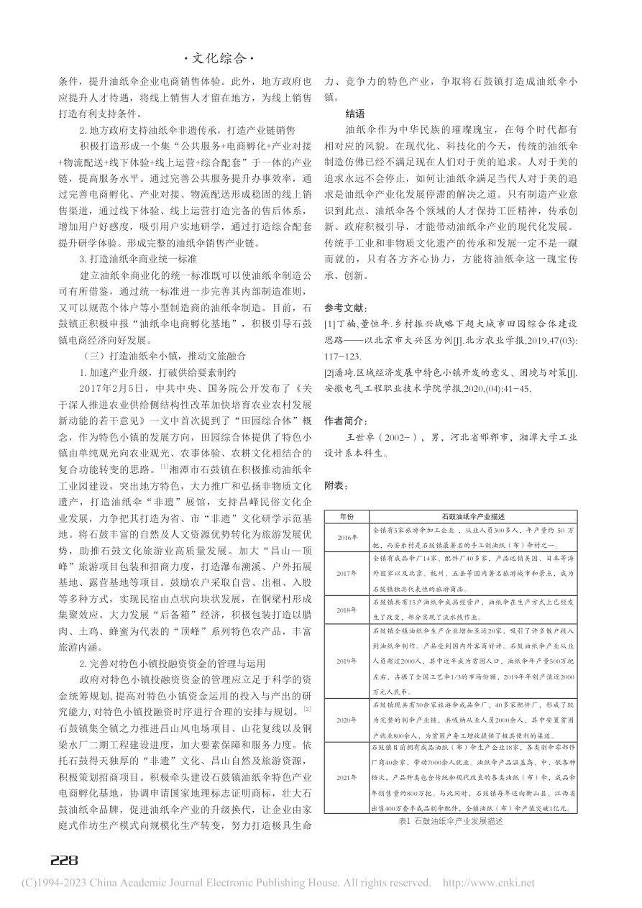
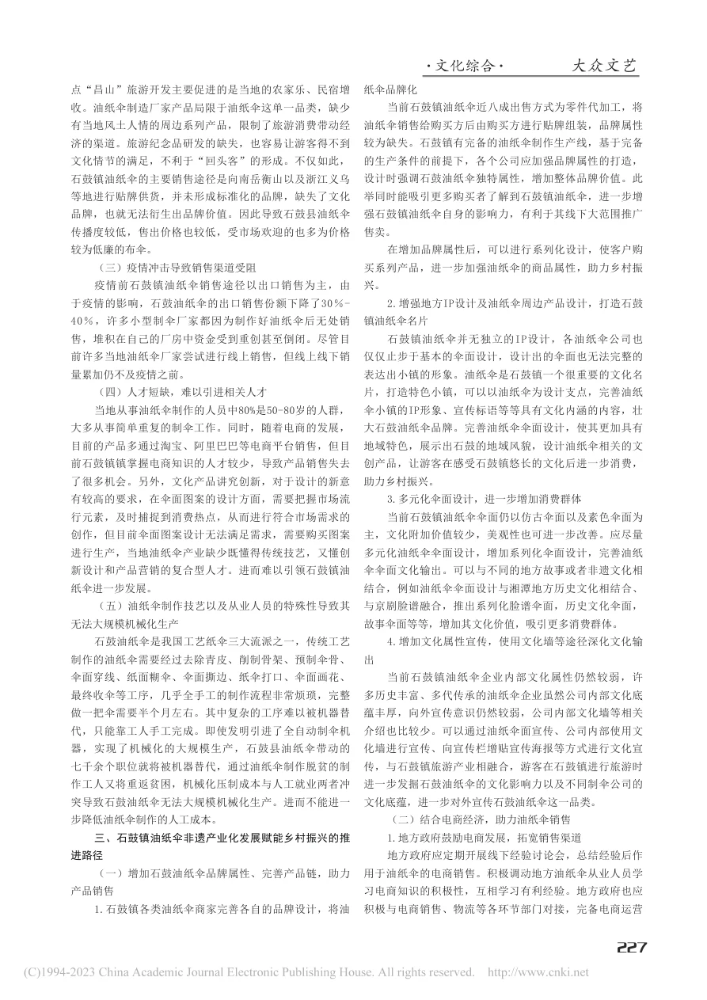
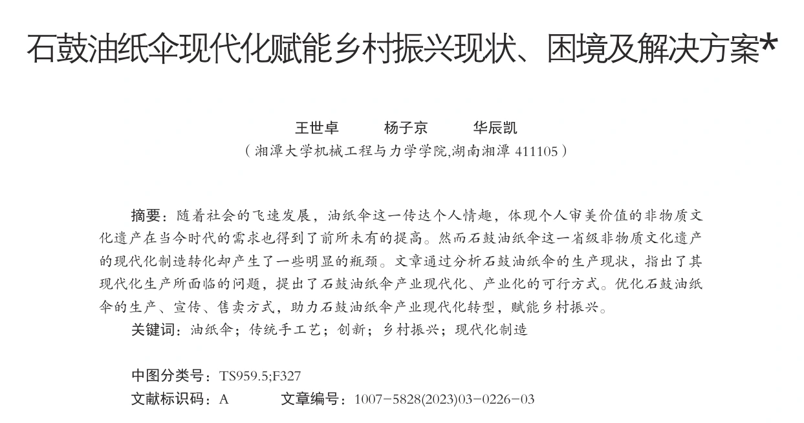

硕士阶段 GPA 专业第1




Design PhD Application · 2027
王世卓 Wang Shizhuo
2027年设计学博士申请
湘潭大学智能产品设计方向硕士研究生，GPA 专业第1。
围绕智能装备、产品服务系统与医疗信息交互，开展用户研究、系统分析与设计转译。
申请概览
2027年博士申请
累计获奖40余项
论文成果
发明、实用新型、外观设计及软著
Undergraduate Foundation
本科实践基础
通过三段实践，积累研究写作、项目统筹与设计落地经验。
调研成员 · 报告撰写
研究写作
文书撰写论文写作
形成初步的文书撰写与论文写作能力。
石鼓油纸伞调研
参与“芙蓉学子·乡村振兴”公益计划，实地走访、整理资料并撰写调研报告。
- 研究表达
- 调研报告进一步转化为论文成果
- 项目支撑
- 国家级大创项目结题获评优秀


论文原页节选2023 / 发表
从材料
《大众文艺》2023 年第 3 期到表达
01
围绕地方工艺的生产与传承，记录现场情况，为调研报告积累材料。
完整经历＋
本科二年级参与首届“芙蓉学子·乡村振兴”公益计划并获得资助，关注地方传统工艺、非遗传承与乡村文化实践。承担调研及报告撰写工作，报告后续转化为论文成果，支撑一项国家级大学生创新创业训练计划项目结题获评优秀。
项目负责人
项目统筹
统筹协调项目申报
在团队实践中锻炼统筹协调与项目申报能力。
唐小生文创工艺坊
负责文书撰写、申报材料整理与团队协调，安排成员分工和实践任务，汇总项目成果。
- 项目入驻
- 校级创新创业学院
- 团队入选
- 2023 年“笃行计划”全国示范性团队
唐小生文创工艺坊项目统筹统筹分工、进度与成果
01
梳理项目目标、实践内容和实施安排，形成团队工作方案。
完整经历＋
本科三年级担任校级创新创业学院入驻项目“唐小生文创工艺坊”负责人。2023 年暑期带领团队入选全国大中专学生“三下乡”乡村振兴“笃行计划”全国示范性团队，为湘潭大学首次入围的两支团队之一。
工业设计实习生 · 本科四年级
设计落地
设计实践方案深化
在企业项目中锻炼设计实践与方案落地能力。
N98 工业设计实习
在长沙九十八号工业设计有限公司实习，参与锂电池产线智能装备及工程机械项目的概念推演与方案迭代。
- 设计参与
- 累计参与 20 余项设计提案
- 后续推进
- 部分进入结构设计与方案深化阶段
↶根据企业要求与工程约束比较、调整方案
↳
通过企业项目，了解从需求分析、方案迭代到设计深化的过程。
完整经历＋
本科四年级进入长沙九十八号工业设计有限公司实习，参与智能装备及工程机械相关设计项目，承担竞品分析、用户研究、概念推演与方案迭代等工作。累计参与 20 余项设计提案，部分方案进入企业后续结构设计与方案深化阶段。
Academic Profile
学术训练、研究成果与博士准备
教育背景、研究方法训练，以及论文与设计项目成果。
01
教育与排名
湘潭大学艺术学院智能产品设计方向硕士研究生，推免入学，GPA 3.9/4.0，专业第1。
本科就读于湘潭大学工业设计专业，专业排名前20%。
02
研究方向
从具体使用问题出发，分析用户需求、场景条件与设计变量之间的关系，为设计决策提供依据。
03
方法训练
具备用户研究、问卷设计、信效度检验、多元统计和聚类分析基础，能够完成实验设计、数据解释和方案推导。
04
博士准备
通过智能装备、服务系统和医疗信息项目，积累问题识别、参数推导与方案验证经验。
Research Achievements
个人研究成果
研究涉及地方工艺、产品形态、文化体验与循环服务系统。
05论文展示
-
研究要点01
石鼓油纸伞现代化赋能乡村振兴现状、困境及解决方案
《大众文艺》，2023(03)：226-228
- 研究方法
- 现状调研、困境归纳与策略梳理
- 能力积累
- 识别地方产业问题，分析设计介入方式
-
研究要点02
制造约束下的农业机械外观精益设计方法
《机械设计》，2025，42(12)：84-90；通讯作者
- 研究方法
- 制造约束分析、外观设计流程优化
- 能力积累
- 协调外观设计与制造要求
-
研究要点03
价值感知视域下油纸伞非遗体验平台设计研究
《包装工程》，2025，46(22)：468-480；通讯作者
- 研究方法
- 价值感知分析、体验流程设计
- 能力积累
- 组织文化体验流程与服务触点
-
研究要点04
Research on the Appearance Evaluation Factors of Small Horsepower Tractors-Based on Component Contour Extraction
Advances in Mechanical Design, Springer, 2027, MMS 206: 1519-1534；EI会议论文；通讯作者 DOI ↗
- 研究方法
- 构件轮廓提取、用户感知评价
- 能力积累
- 产品形态变量识别与量化评价
-
研究要点05
Innovation of the Circular Transaction Service Mode of Furniture Products Oriented by User Demand
BioResources, 2026, 21(1): 1725-1746；通讯作者 官方全文 ↗
- 研究方法
- 用户需求分析、产品服务系统建模
- 能力积累
- 多主体服务关系梳理与系统建模
展开卡片，查看研究要点
申请支撑信息
知识产权、荣誉奖项、学术交流与实践经历。
荣誉与竞赛
国家奖学金
校级荣誉
- 湘潭大学十佳研究生标兵
- 一等奖学金
- “伟人之托”奖学金
竞赛奖项
- 国家级
- 10余项
- 省级
- 20余项
知识产权
5 项- 发明专利
- 1项
- 实用新型专利
- 2项
- 外观设计专利
- 1项
- 软件著作权
- 1项
学术会议
4 次- 口头报告 3 次
- 湖南省研究生创新论坛、机械设计国际会议
- 墙报与交流
- 工业设计学术年会
实践经历
- 工作坊日本千叶大学 SDI-A
- 墨田区街区服务研究
- 企业实习长沙九十八号工业设计
- 智能装备及工程机械设计实践
语言与工具
- CET-4
- 656
- CET-6
- 516
英文文献阅读与学术交流基础
RhinoKeyShotFigma
方案推演 · 图表绘制 · 版面整合
MY RESEARCH PATH
我的研究路径
从问题到设计
研究过程的四个环节
- 01
需求识别
结合使用者的任务与场景，识别设计问题。
访谈、观察、语料分析、感性评价 - 02
分析与建模
分析需求优先级及形态与意象的关系，形成设计依据。
因子分析、需求分类、权重计算、构件提取 - 03
设计转译
将分析结果用于产品、交互与服务设计决策。
形态参数、功能模块、服务节点、信息架构 - 04
方案评价
结合感性意象评价、可用性量表与原型任务测试，考察方案表现。
SUS、专家走查、任务绩效、语义评价
三个设计案例
博士研究计划
面向2型糖尿病患者的生成式人工智能饮食建议信息设计研究
推荐理由的两种组织方式
膳食安排主食定量，增加全谷物选择
备餐条件准备时间 5 分钟，无加热设备
共同推荐按既定份量选择全麦面包
特点说明
全麦制品保留了膳食纤维等成分。面包已按份分装，可直接食用，无需加热。
关联解释
全麦制品保留了膳食纤维等成分，符合增加全谷物选择的安排。面包按份分装、无需加热，适合只有 5 分钟、无加热设备的备餐条件。
理由节选 · 两版共用推荐方案、基础事实与必要适用条件
- 评价指标
- 建议采纳
- 适用性判断
来源查阅的四种界面条件
| 切换查看 | 并排查看 | |
|---|---|---|
| 从首页打开 | 建议原文首页⇄ 首页 · 切换 |
建议原文首页 首页 · 并排 |
| 定位相关段落 | 建议原文相关段落⇄ 定位 · 切换 |
建议原文相关段落 定位 · 并排 |
四组共用 AI 回答与完整原文，比较打开位置和阅读布局的作用。
- 评价指标
- 建议采纳
- 原文理解
研究实施路径
质性探索
关键事件访谈
归纳建议评价与采纳依据
完善案例
与评价题目
实验检验
推荐理由解释实验
来源查阅支持实验
两项实验分别招募独立样本
综合访谈
与实验结果
设计转化
信息设计策略
理由组织与来源查阅支持